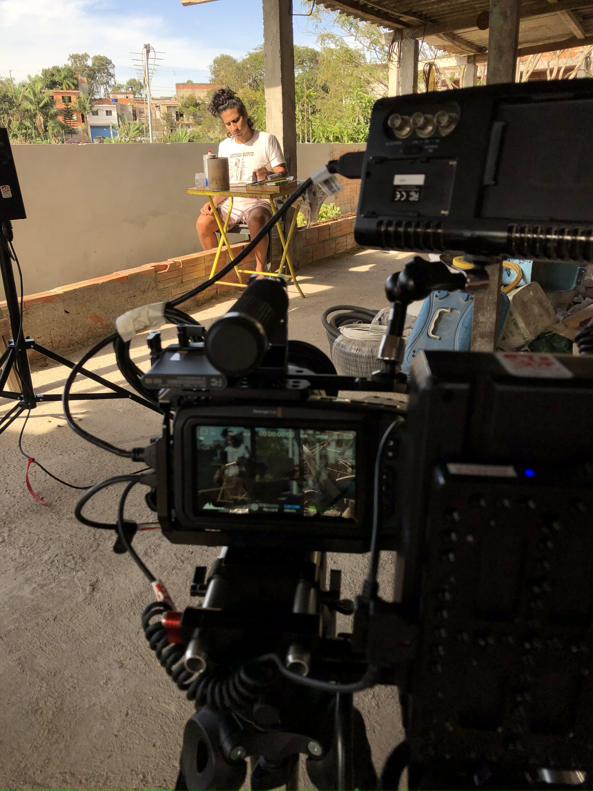
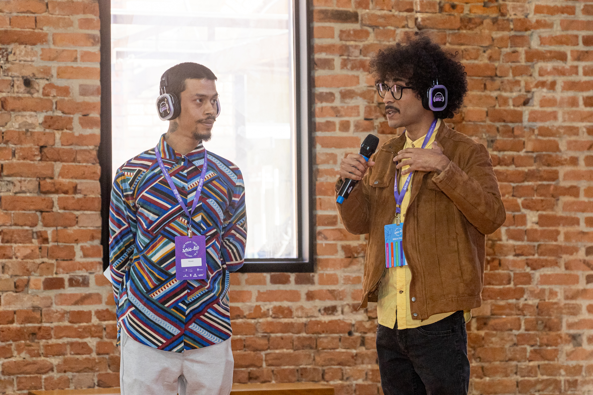
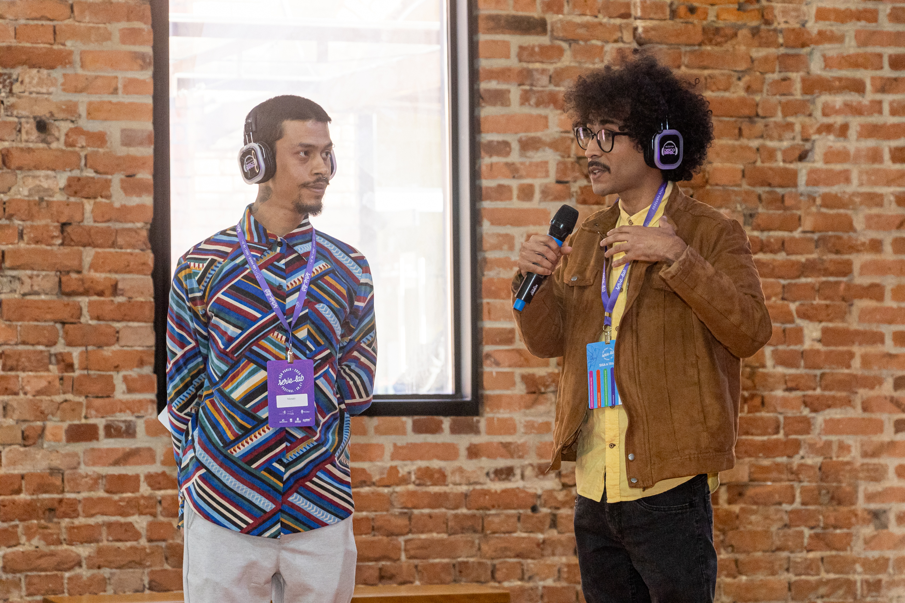

Mosca Frita é um coletivo de cinema que nasce da convivência, da curiosidade e do nosso jeito particular de ver o mundo a partir da quebrada. Contamos as histórias como vivemos: com humor, afeto, experimentação e contradição.
O coletivo nasceu em 2018 com muita vontade de discutir, pensar e realizar cinema. Desde então produzimos um videoclipe, quatro curtas-metragens (Iluminar, Não Existem Vantagens ao Ser Invisível, Rua de Baixo vs Rua de Cima e O Último Bailão), ministramos oficinas de cinema e atuação para crianças no Instituto Anchieta Grajaú, São Paulo – SP, e oficinas de Introdução ao Cinema para o projeto Cinema de Raiz, realizado na cidade de Conceição do Mato Dentro - MG.
Em 2025, fomos selecionados para o Kinolab – Desenvolvendo Séries, com o projeto ‘Virei Playboy?’ dando um novo passo e partindo para a criação de nossa primeira narrativa seriada. O projeto também foi selecionado para Doctoring Session no Serie Lab Festival.
 

Somos um grupo que trabalha junto porque acredita em processos compartilhados, em novas linguagens e em histórias que ainda não foram contadas. Nosso cinema nasce do cotidiano, das nossas referências cruzadas e da escuta ativa dos nossos territórios.
Seguimos produzindo com responsabilidade e o compromisso de transformar o audiovisual brasileiro através de novas narrativas, novos olhares e novas formas de fazer.